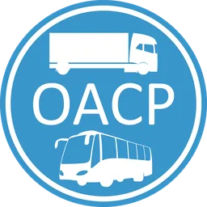
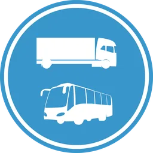
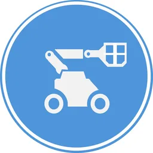
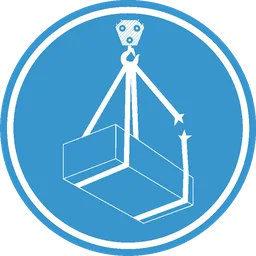
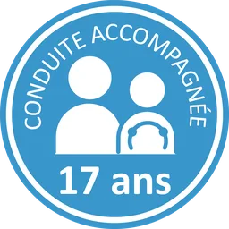
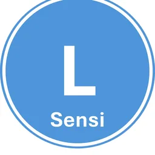
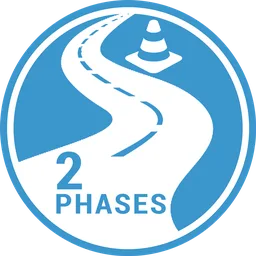

Camion, grue, nacelle, élingage : on vous forme sur notre circuit.
Le Centre de formation routière de Savigny, à moins de dix minutes de Lausanne. Cours OACP, permis professionnels, grutier, cariste, nacelles, cours 2 phases.
Les formations
Classées selon ce que vous devez obtenir, pas selon notre organigramme. Le repas est inclus dans la plupart des cours.
Conducteurs professionnelsTransport de choses ou de personnes.

OACP : cours de base et formation continue
Le CFR prépare au certificat OACP (permis 95) depuis plus de 15 ans : 2 × 3 jours avec préparation aux examens. Agréé pour la formation continue, 5 cours sur 5 ans.

Permis professionnels C, C1/D1, D, CE et BE
Camion, autocar, minibus, remorque : toutes les catégories professionnelles.
Chantier et entrepôtLes permis pour lever, élinguer, déplacer.

Plateformes élévatrices (PEMP)
Nacelles mobiles 3a (à ciseaux) et 3b (articulées), nacelles fixes 1a et 1b, selon les directives de la CFST. Permis valables en Suisse.
Grutier A (sur camion) et B (grues à tour)
Cours de base et inscription aux examens, selon l’Ordonnance sur les grues et la directive CFST 6510.

Élingage des charges
4 heures, attestation après examen théorique. Obligatoire depuis le 1er avril 2023 pour toute personne qui soulève des charges.
Cariste
Chariots élévateurs à fourches. Formation reconnue par la SUVA.
Nouveaux conducteursDe l’élève au permis illimité.

Conduite dès 17 ansNOUVEAU
4 heures d’initiation sur piste privée, en groupe, avec un moniteur agréé. Véhicule automatique uniquement, sans permis d’élève.

Cours de sensibilisation
8 heures dès l’obtention du permis d’élève. L’attestation est transmise électroniquement au Service des automobiles du canton de Vaud.

Cours 2 phases
Une journée, théorie et pratique sur la piste, pour vivre des situations critiques et savoir y répondre. Location de véhicule possible sur place.
Permis voiture, auto-école CFR
Premiers secours, sensibilisation, théorie et cours de conduite, en packs.
Permis moto
Cours de base, d’initiation et de préparation aux examens, sur circuit privé et sécurisé.
Un vrai circuit, en pleine campagne
Le circuit s’étend sur 60 000 m², à la Claie-aux-Moines, commune de Savigny. Le centre n’est pas un centre de conduite traditionnel : le cadre champêtre et la qualité de l’accueil font partie de la formation.
- 12 000 élèves par anAnnoncé par le centre, tous domaines de la circulation.
- Depuis Lausanne, moins de 10 minutesZone industrielle en Publoz, Chemin des Gavardes.
École de moniteurs
Chaque année, l’école forme des moniteurs et monitrices de conduite qui enseigneront toutes les catégories de permis en Suisse.
Brevets fédéraux de moniteur de conduite
Dès 2027, un brevet fédéral propre à chaque catégorie d’enseignement (A, B, C et D). Pour convenir d’un entretien : 021 654 77 70.
Formation continue des moniteurs et animateurs 2 phases
Dispensée au CFR par l’école Prométhée, créée en 1997 par Sylvaire Coquil. Stéphane Laub en assure la direction.
Nous contacter
Une question sur une formation, une session ou une inscription ? Le secrétariat vous répond.
info@cfr-savigny.chAuto-école CFR Montchoisi
Salle de théorieAvenue de Jurigoz 20
1006 Lausanne
079 412 82 89 · Itinéraire